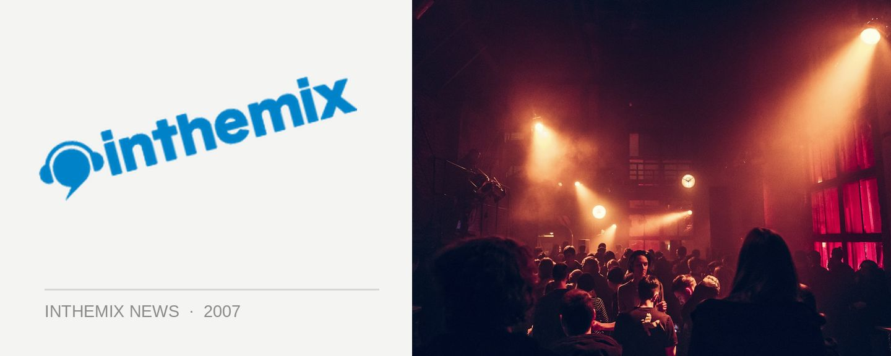

Ferry Corsten & John ‘00’ Fleming join Sublime summer lineup
Plus many, many more… Check out the lineup below for the complete list of internationals talent that Sublime has got planned for its summer calendar.
You’ll need no introduction to either of the above trance headliners. Ferry Corsten is the world’s most prolific, consistent and innovative trance producers and he returns just a few brief days before New Years Eve to follow up the massive gig that he played at Sublime earlier this year in support of his L.E.F. album. John ‘00’ Flemming is another enduring name, a UK stayer famous for playing trance of all shades but recently turning heads with his preference for psytrance.
Some of the other names that will be hosted at Sublime for the very first time will include Rafael Frost from the Netherlands, famous for his hit from last year Mute Your Mind as well as more recently his high-impact electro trance mix of Alex M.O.R.P.H. & Rank 1’s anthem Life less Ordinary. We’ll also be hearing sets from Dutchman Bart Claessen and Japan’s Remo Con, as well as a bunch of special events featuring Sublime’s local DJ crew.
All tickets go on sale Monday 29th Oct at inthemix, have a look below for the full list of internationals that you’ll be hearing at Sublime over summer!
Nov 2: Rafael Frost (Netherlands)
Nov 9: Interstate Voodoo Double Trouble: Amber Savage vs Baby Gee
Nov 16: Interstate Voodoo Double Trouble: Archie vs Dr Willis
Nov 23: Voodoo ‘Double Trouble’ 11th Birthday
Nov 30: John 00 Fleming (UK)
Dec 7: Bart Claessen (Netherlands)
Dec 14: Remo Con (Japan)
Dec 21: Sublime X-Mess Rewind
Dec 28: Sublime ‘3 steps ahead’ NY party feat. Ferry Corsten